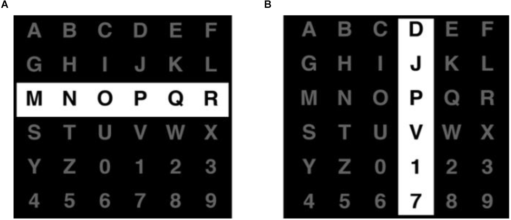
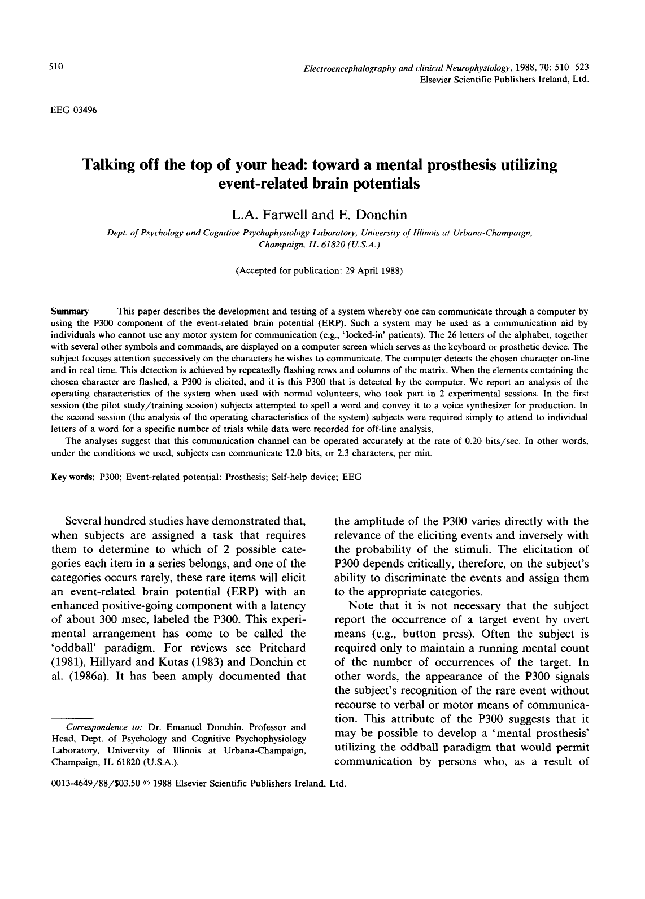

P300 Speller
Talking off the top of your head

Overview
The P300 Speller was the first brain-computer interface (BCI) spelling system based on the P300 event-related potential (ERP). Users selected letters and numbers from a 6×6 matrix simply by focusing attention on the target; the system detected the resulting P300 brainwave and inferred the chosen character. It provided a non-muscular communication channel for people with severe motor impairments.
Deep dive
Farwell and Donchin described the system in “Talking off the top of your head: toward a mental prosthesis utilizing event-related brain potentials,” Electroencephalography and Clinical Neurophysiology 70(6):510–523, 1988.
The P300 is a positive EEG deflection that peaks roughly 300 ms after an infrequent, attended “oddball” stimulus. In the speller, this signal is elicited whenever the row or column containing the user’s target character flashes.
A 6×6 grid displays the alphabet plus digits. Rows and columns flash in random order; the user silently counts flashes that include the desired character. The row and column producing the largest P300 responses are identified, and their intersection gives the selected character.
The original report used a stepwise linear discriminant analysis (SWLDA) classifier, tested on four subjects, and achieved about 95% accuracy at roughly 12 bits/min information transfer rate.
Farwell and Donchin’s paper demonstrated that people could spell without any overt muscle movement. Later work introduced the checkerboard paradigm, region-based spellers, auditory/tactile variants, hybrid P300+SSVEP systems, and, most recently, LLM-augmented P300 spellers such as ChatBCI.
The P300 Speller established the dominant design for non-invasive visual BCI spellers and remains the reference architecture for communication BCIs used by people with ALS and locked-in syndrome.
The paper’s title coined the phrase “talking off the top of your head.” Modern descendants literally pair the speller with large language models to predict words and cut the number of required selections by up to 80%.
Team & pioneers
- Lawrence A. Farwell Cognitive psychophysiologist and inventor; led the development of the P300 Speller and later coined the term "brain fingerprinting."
- Emanuel Donchin Professor of psychology at the University of Illinois at Urbana-Champaign; Farwell's advisor and co-author of the 1988 paper that established the row-column P300 speller.
- University of Illinois at Urbana-Champaign The research home where the first mental-prosthesis spelling interface was developed and tested.
Media

Sources
- Farwell, L. A. & Donchin, E. (1988). “Talking off the top of your head: toward a mental prosthesis utilizing event-related brain potentials.” PDF
- Sapien Labs, “Implementations of the P300 BCI Speller”
- Pan, J. et al. (2022). “Advances in P300 brain–computer interface spellers: toward paradigm design and performance evaluation.” Frontiers in Human Neuroscience 16:1077717
- IEEE Brain on X, ChatBCI pairing P300 speller with LLMs
- YouTube: “The P300 Speller: ‘Talking off the Top of Your Head’”